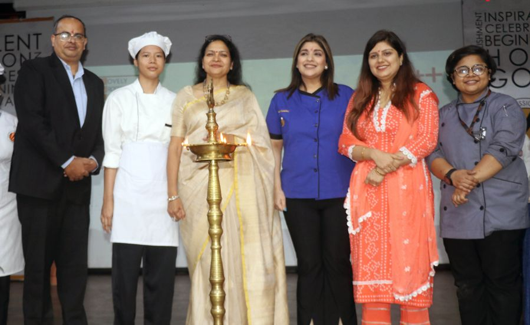
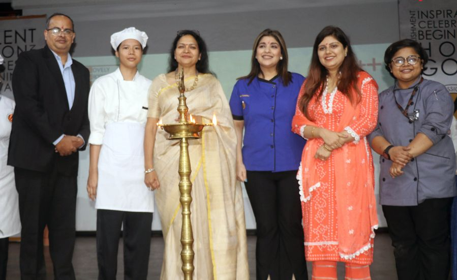
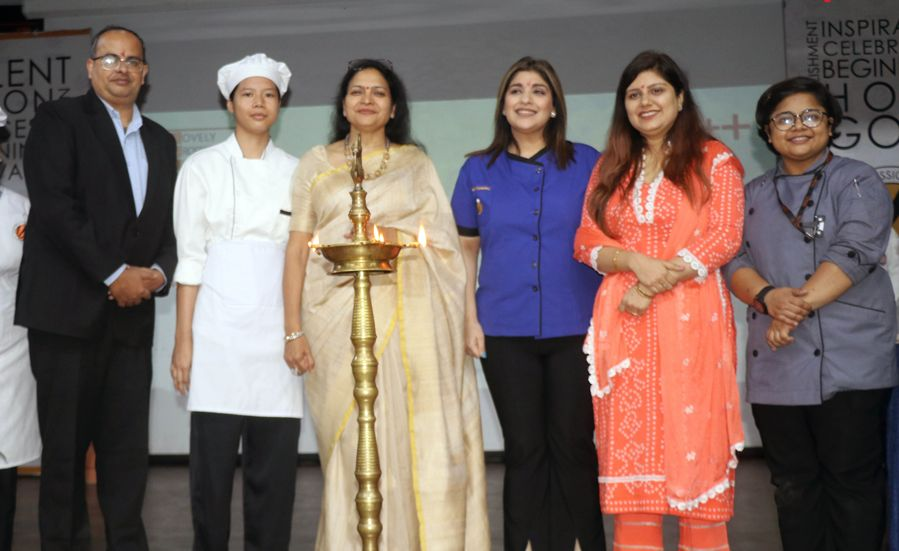
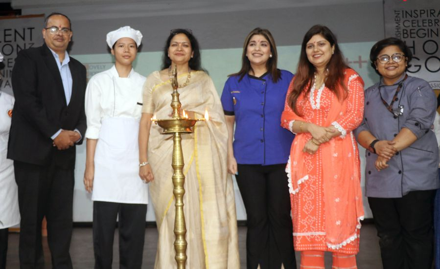

Celebrity Chef Rakhee Vaswani and Health Nutritionist Dr Ashni Kapoor awakened LPU students about the benefits of Blueberries
Culinary creativity, nutritional education, and motivation to students ruled the day
Jalandhar: The School of Hotel Management & Tourism at Lovely Professional University (LPU) organized a celebrity master-class on American Blueberries. Considered a “Super-food” globally, students were taught about its various health benefits & delicious recipes. In a way, the school held culinary creativity, nutritional education, and motivation to its students.
For this, celebrity Chef Rakhee Vaswani from Mumbai and Health Nutritionist Dr Ashni Kapoor visited LPU and awakened students that blueberries are an excellent source of dietary fibre, vitamin C and K, manganese, iron, and a number of antioxidants. Chef Vaswani demonstrated her culinary prowess by preparing delectable dishes with blueberries.
The USA Blueberries’ Health Nutritionist Dr Ashni Kapoor enlightened students about numerous medicinal and health benefits associated with blueberries. She informed that these provide a lot of nutrients, which contribute to various positive effects on health, including heart, brain, digestive, eye and skin benefits. These can contribute to Type- 2 diabetes management, cancer prevention and weight management due to their antioxidant and anti-inflammatory properties.
On this occasion, LPU’s Pro Chancellor Rashmi Mittal released a book titled- ‘Grab A Dose of Blue’. This book contains details about blueberries’ culinary delights and diverse uses in both cooking and baking. Mrs Mittal motivated the students by invoking them to keep on embracing their profession with passion. Emphasizing upon the bliss in the culinary world, Mrs Mittal also appreciated the creative spirit of the students. Mrs Mittal was accompanied by invited guests, Head of the School and faculty members.
Chef Vaswani is trained at various prestigious institutes and renowned chefs around the world- from Tante Marie, Ashburton Cookery School, Chef Eric Periz and even Le Cordon Bleu. She informed students that ‘Blueberries’ are so mild and delicious that they pair well with many other things. She revealed this in various preparations and recipes including “Blueberry Bars with Buttery crust; Blueberry Cookies; Blueberry Apple Walnut Salad; Blueberry Banana Bread; Blueberry Broccoli Spinach Salad; Homemade Blueberry Ice Cream; Blueberry Lemon Bread and many such others. Her live demonstration featured dishes including Blueberry Barfi and others from the pages of the released book.
More than 200 students participated in the event to gain valuable insights into culinary techniques, and health benefits of incorporating blueberries into their creations. At this time, two of the food bloggers were also present to capture the essence of the event. The students not only learned about different types of blueberries but also had the opportunity to taste the featured ingredient, enhancing their understanding of its flavour profile.
LPU’s School of Hotel Management has many modern kitchens and bakeries, which are equipped to enable students to perform scientifically, and attain their best learning through most modern gazettes. There are also training restaurants to teach students about the authentic serving style of food and beverage. In fact, LPU offers a 100% placement record in Hotel Management programmes. Industry internships are provided in top national and international five-star hotel brands like Leela Palace and Resorts, ITC, Taj, Oberoi, Hyatt, Marriott, Hilton, Renaissance & Marriott (Malaysia ), Taj Tashi & Le Meridien Thimphu (Bhutan), Westin Turtle Bay Resort (Mauritius), Taj Exotica (Maldives), Shangri-la (Thailand), Marriott & Hyatt (USA), Michelin Star Restaurant (L Auber Grade Trama) France, etc.